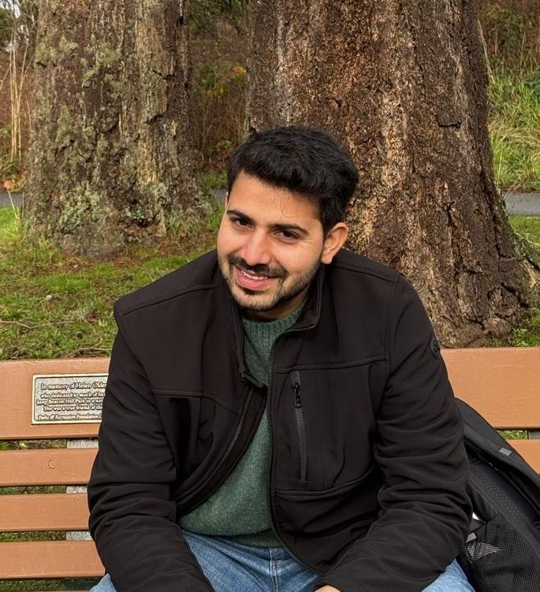

Astrophysicist · Transient Phenomena · Multi-Messenger Astronomy
Exploring gamma-ray bursts, kilonovae, superluminous supernovae, and tidal disruption events through multi-wavelength observations with the GROWTH-India Telescope and global observatory networks.

I am an astrophysicist specialising in time-domain and high-energy transient phenomena, with primary focus on Gamma-Ray Bursts (GRBs), kilonovae, superluminous supernovae (SLSNe), and tidal disruption events (TDEs).
My doctoral work at IIT Bombay centred on the GROWTH-India Telescope — India's first robotic research telescope — leading rapid follow-up campaigns for GRB afterglows and gravitational-wave electromagnetic counterparts. I am currently a Postdoctoral Fellow at the Center for Astrophysics | Harvard & Smithsonian and a Junior Investigator at the NSF-AI Institute for AI and Fundamental Interactions (IAIFI).
My research combines multi-wavelength observing campaigns (optical, NIR, X-ray, radio) with physical modelling to decode relativistic jet physics, r-process nucleosynthesis, and the diversity of catastrophic stellar endpoints.
Characterising the photometric and spectroscopic evolution of SLSNe — among the most luminous stellar explosions known — to constrain central engine physics, host galaxy environments, and progenitor channels.
Multi-wavelength afterglow modelling of long and short GRBs. Probing relativistic jet physics, prompt-emission mechanisms, and compact-object central engines using Swift, Fermi, and ground-based telescopes.
Rapid follow-up photometry and spectroscopy of r-process nucleosynthesis transients from neutron-star mergers. Led GROWTH-India campaigns for LIGO/Virgo/KAGRA O3 and O4 observing runs.
Multi-wavelength monitoring of stars disrupted by supermassive black holes, probing accretion disc formation, relativistic jet launching, and the census of quiescent black holes in galactic nuclei.
Former Development team leader for India's first robotic 0.7 m research telescope at IAO Hanle (4500 m). Designed automated real-time scheduling and pipelines for transient discovery, follow-up, and multi-band photometry.
Coordinating global telescope networks for EM follow-up of gravitational-wave events, high-energy neutrino alerts, and gamma-ray triggers in near-real time with rapid-response observing protocols.
Applying machine-learning methods to transient classification, automated survey pipelines, and neural-network approaches to time domain astronomy as a Junior Investigator at IAIFI (NSF-AI).
Postdoctoral Fellow · Center for Astrophysics | Harvard & Smithsonian
harsh.kumar@cfa.harvard.edu · 0000-0003-0871-4641
Whether it's a joint observing proposal, transient follow-up coordination, a data-analysis collaboration, or a discussion about the latest GRB or gravitational-wave detection — I'm always happy to connect with fellow researchers worldwide.
Connect with me on academic and professional platforms: